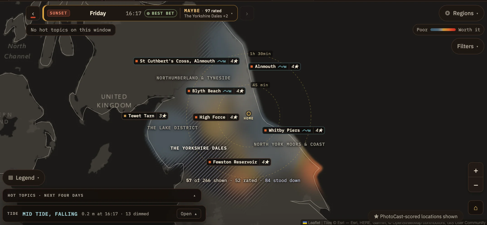
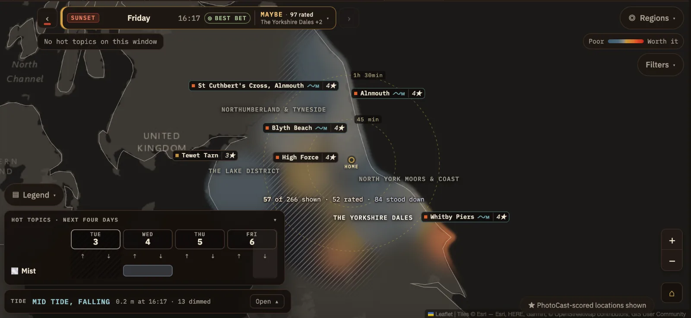
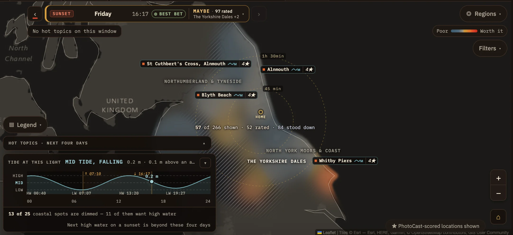

Map.
The Map shows one sunrise or sunset at a time, painted across the region in the forecast colours. Use it when you have a place in mind, or to find somewhere new along a stretch of coast or a valley.
Choosing the sunrise or sunset
The control at the top left names the light you're looking at, such as SUNSET Friday 16:17. Beside it you'll see the verdict, how many locations were rated, and the regions that look best. ◎ BEST BET marks the light PhotoCast recommends most. Use ‹ and › to step through the days, or tap the middle to choose from the full list.
Under it, a chip names any hot topics on this light, such as Mist · 2 places, or says No hot topics on this window. When the light you're on is poor and a nearby one is better, the control says so, for example Tomorrow sunset is better ›. Tap it to switch.

123456789- 1Previous. Steps back to the sunrise or sunset before this one.
- 2Which light. SUNRISE or SUNSET, or an aurora night when one is forecast.
- 3Day and time. The day, and the time of sunrise or sunset at home.
- 4Best bet. Shown on the light PhotoCast recommends most in the days ahead.
- 5Verdict and count. The verdict for this light and how many locations were rated.
- 6Where's best. The region that looks most promising, with a count of the others close behind.
- 7Full list. Tap the middle of the control, or the ▾, to choose any sunrise or sunset from a list.
- 8Next. Steps on to the next sunrise or sunset.
- 9Hot topics on this light. Names any topics on this sunrise or sunset. On a poor light, a Tomorrow sunset is better › suggestion can appear here too.
Colour and zooming in
Zoomed out, the colour gives you the broad picture region by region, from Poor to Worth it on the key at the top right. As you zoom in it gives way to individual locations, each shown as a chip with its name and rating. What the colours and hatching mean.
A line on the map counts what you're seeing, such as "57 of 266 shown · 52 rated · 84 stood down". Filters and the area in view change the first number.
To move around quickly, use ◎ Regions ▾. Choose a region to see it on its own, ranked, then go back to every region on this light. The ⌂ button at the bottom right brings the map back to your home area.
Locations
Tap a location chip for a summary: its rating, the drive, a Leave by time, how dark the sky is, and the tide if it's on the coast. Open it for the full forecast over the coming days. From here you can also choose Plan from here to plan from that area for a while. More on planning from elsewhere.
ProDrive and leave-by times, Fiery Sky and Golden Hour scores and the tide at the light are available with Pro.
Filters
Filters ▾ opens the filter panel. The number beside it tells you how many filters are on.
- Minimum rating
- Show only locations at or above a star rating.
- Subject
- Landscape, Wildlife, Seascape, Woodland and Waterfall. Choose one or several.
- Bluebell Pro
- Appears in season, for woods known for bluebells.
- Drive time Pro
- Any, 45 min, 1h 30 or 2h 30 from home.
- Sky
- 🔭 Dark sky only shows locations with little light pollution, which suits aurora, astrophotography and stargazing.
- Scope
- Your own area or everywhere. Appears once you've set a home postcode.
The bottom of the panel shows how many locations are left, such as "18 of 64 shown", with Clear all to start again.
Hot topics panel
The Hot topics panel sits at the bottom left and starts closed. Open it with ▴ to see the next four days, each split into sunrise ↑ and sunset ↓. Each topic gets a row, with a bar across the lights it covers. The day you're looking at is outlined.

Tide panelPro
When the map shows any coast, a Tide panel appears at the bottom left. It answers the coastal question a sky forecast can't: will the water be where you want it when the light arrives?
The tide curve
Open the panel to see the whole day's tide, from midnight to midnight. There's a lot in it, so here it is piece by piece, using Friday's 16:17 sunset.

123456789- 1The answer in words. The state of the tide at the light and which way it's going (MID TIDE, FALLING), then the height and how it compares with an average tide. If you read nothing else, read this.
- 2High, mid and low. Faint dashed lines across the chart mark high, mid and low water. The level the light falls in is highlighted.
- 3The tide through the day. The curve rises and falls twice a day, and the shading under it is the water. Night is shaded darker.
- 4Sunrise and sunset. Gold lines with their times, ↑ 07:10 and ↓ 16:17.
- 5High and low water. The times of each turn of the tide, such as HW 13:20 and LW 19:27.
- 6Where the tide catches the light. The bright dot is the water level at the moment of the light, with its height. Here it's 0.2 m, halfway down a falling tide.
- 7What it means for the coast. How many coastal spots in view are dimmed because the water isn't what they want, and which way most of them want it.
- 8When it gets better. A jump to the next sunrise or sunset that gives those spots their water. If there isn't one in the next four days, it says so.
- 9Close. Folds the panel back to a single line.
The quickest way to use it: read line 1, then look at where the dot sits against the gold line. If it's at the top or bottom of the curve, high or low water is on the light.
Locations that want the tide
Each coastal location prefers high, mid or low water. Where the tide at the light suits a location, its chip carries a small wave with a letter for the water it wants, such as ∿M. Where it doesn't, the chip is dimmed and its wave has an arrow: up if the spot needs more water and down if it needs less. Its star rating doesn't change, because a wrong tide doesn't make the sky any worse.
Closed, the panel is one line, such as TIDE · MID TIDE, FALLING · 0.2 m at 16:17 · 13 dimmed. Open, the footer explains the count ("13 of 25 coastal spots are dimmed — 11 of them want high water") and can jump to the next sunrise or sunset that gives them the water they want. If there isn't one in the next four days, it says so.
ProThe tide panel and tide matching for coastal locations are available with Pro. Lite still lists spring and king tides on At a Glance and Coming up.
Legend and reach rings
▤ Legend ▾, at the bottom left on a computer, explains the colour scale, the hatching, the zoom stage and any extra markings on the current map. With a home postcode set, it also has a Reach rings switch. The rings around home are labelled with drive times, such as 45 min and 1h 30min, to give you a sense of distance.
Aurora and astro nights
When the northern lights are possible, aurora nights appear in the list of sunrises and sunsets. Choose one and the map switches to aurora colours, with a line showing how far south the aurora should be visible. Astro nights, which rate dark-sky locations for stars, appear in the same list.
The Aurora and night sky guide covers both, along with aurora alerts and dark-sky ratings.
ProAurora forecasts and viewing information are available with Pro.
Big seas and stand-downs
On rough days, piers and lighthouses where waves are expected to break at high water get a lightning-bolt chip. It's ringed when high water falls on the light. When the weather rules an area out, it's hatched and the cause is named. More on hatching.
On a phone
- Filters open as a sheet from the bottom of the screen.
- Tap a location for a peek sheet with its summary, and drag it up for more.
Tips
- Coming from At a Glance or Coming up, the map opens on the same light. ← At a Glance takes you back.
- On the coast, open the Tide panel first. A dimmed 4★ headland usually means "not this morning", not "not here".
- Zoom in before deciding. One 5★ spot can hide inside an area that looks average from a distance.